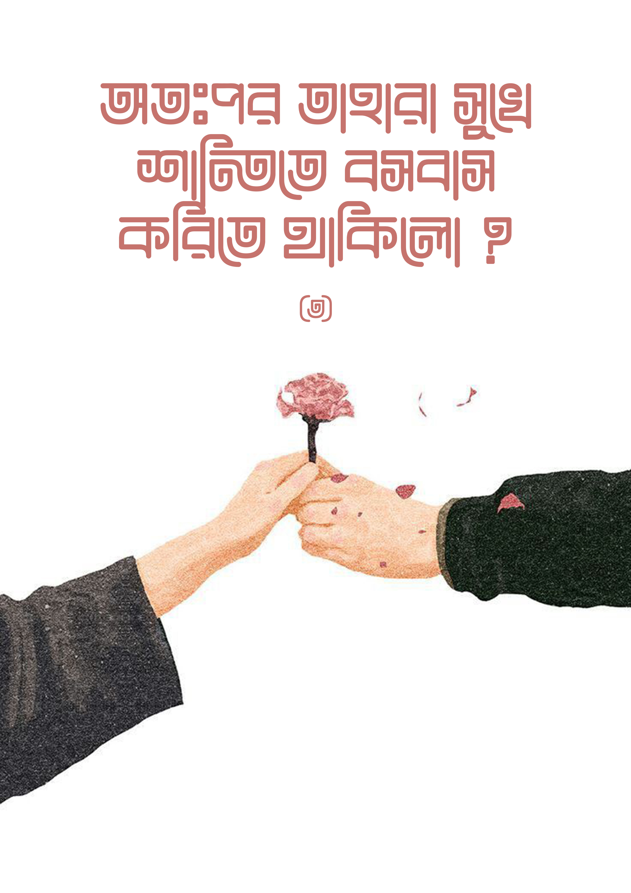

কিন্তু এরেঞ্জড ম্যারেজ মানে তো একটা অচেনা লোকের সাথে শুয়ে পড়া। এটা কেমন না? আমি একজন মানুষকে চিনলাম না জানলাম না অথচ তার সাথে শুয়ে পড়লাম- এটা অস্বাভাবিক না?
বিয়ে মানেই কোনো কথা নাই বার্তা নাই, গল্প করা নাই, পরিচিত হওয়া নাই, বাসর ঘরের দরজাটা জাস্ট লাগিয়েই হামলে পড়া - এমন একটা ভুল ধারণা আমাদের সমাজে বহুল প্রচলিত। কিছু কিছু ক্ষেত্রে যে এমন হয় না তা না। তবে সেটার মাত্রা কম। বিয়ের পর গল্প খুনশুটি একে অপরের সাথে পরিচিত হওয়া ইত্যাদির বেশ কিছুটা পরে অন্তরংগতার ব্যাপারটা আসে। আর এসব বাদ দিলেও স্বামী স্ত্রী একেবারেই কিন্তু অপরিচিত থাকছে না। মানে বিয়ের পূর্বে পাত্রী দেখা ইত্যাদি আনুষ্ঠানিকতাগুলো সম্পন্ন হবার সময় কিন্তু একটা সীমারেখার মধ্য থেকে তাদের মধ্যে দেখা সাক্ষাত কথাবার্তা হচ্ছেই। প্রেমের মতো কোনো লুকোচুরি না করে স্পষ্টভাবেই একজন অপরজনকে তার পছন্দ অপছন্দের ব্যাপারগুলো জানাতে পারছে। কাজেই এরেঞ্জড ম্যারেজ মানে চিনি না জানি না একেবারে অপরিচিত মানুষের সাথে হুট করে শুয়ে পড়া ব্যাপারটা কিন্তু তা না।
দেখ সেকুল্যারদের এরেঞ্জড ম্যারেজ নিয়ে এই পয়েন্টে ব্যাপক আপত্তি। আবার এরাই কিন্তু হুকআপ কালচারকে ব্যাপক মাত্রায় প্রমোট করতে চায়। বিয়ের মতো একটা পবিত্র ও শক্তিশালী বন্ধন যেখানে পরিবার সমাজ ও রাষ্ট্রের মাধ্যমে নিরাপত্তা লাভ করে অন্তরংগ হওয়া যায়, প্রতারণা বা খারাপ কিছু ঘটার ঝুঁকি অনেক কম থাকে তা সেকুল্যারদের কাছে হারাম। কিন্তু হুকআপ কালচারের মাধ্যমে পার্টি, নাইট ক্লাব,বার ইত্যাদিতে গিয়ে একেবারে সম্পূর্ণ আগুন্তকের সাথে প্রতারণা, ধর্ষণ বা যৌনবাহিত রোগের ঝুঁকি নিয়ে ওয়ান নাইট স্ট্যান্ড করা খুব আরাম!
ওর সাথে আমার মনের মিল হচ্ছে কিনা, ওকে আমার পছন্দ হবে কিনা, ওর সাথে আমি একই ছাদের নিচে সারাজীবন কাটাতে পারব কিনা, আমাদের দাম্পত্য জীবন সুখের হবে কিনা এটা জানার পূর্বশর্তগুলো কি? কি কি কাজ করলে সেই মানুষটাকে চেনা যাবে? বিদ্যমান বিশ্বকাঠামো এই সমস্যার যে যে সমাধানগুলো দিয়েছে তা হচ্ছে -
১. তার সাথে ডেট করতে হবে মানে প্রেম করতে হবে,রেস্টুরেন্টে যেতে হবে ডিনারে যেতে হবে।
২.দূরে বা কাছে কোথাও ট্যুরে যেতে হবে
৩. মাঝে মাঝে রুম ডেইট বা বিছানায় যেতে হবে
৪. লিভ টুগেদার করে বিয়ের আগে একটা ট্রায়াল দিয়ে নিতে পারলে তো একেবারে সোনায় সোহাগা
বিয়ের আগে মানুষ চেনার এই শর্তগুলো অক্ষরে অক্ষরে অ্যামেরিকানরা মেনে চলেছে। পরিণতিতে কী হয়েছে? বিচ্ছেদের মাত্রা বেড়ে যাওয়া, পারিবারিক অশান্তি, ঝগড়া, তীব্র হতাশা, সহিংসতা, ধর্ষণ, যৌন নির্যাতন, খুন, মামলা-মোকদ্দমা, জেল, জরিমানা। এমনকি আজ তারাই বলছে যেসব অ্যামেরিকান বিয়ের আগে লিভ টুগেদার করে, দাম্পত্য জীবনে তারা সুখী হচ্ছে না; কোর্টে বিচ্ছেদের আবেদন করছে। অ্যামেরিকার হাজার হাজার নারীর উপর চালানো গবেষণা থেকে দেখা যাচ্ছে যারা বিয়ের আগে লিভ টুগেদার করছে, তাদের বিচ্ছেদের সম্ভাবনা ১৫ শতাংশ বেশি। ইউনিভার্সিটি অফ ডেনভারের মনোবিজ্ঞানী গ্যালেনা রৌডস বলছে, ‘আমরা সাধারণত মনে করি বেশি অভিজ্ঞতা থাকা ভালো কিন্তু বাস্তবতা পুরো বিপরীত। বেশি অভিজ্ঞতা দাম্পত্য জীবনের সুখ কেড়ে নেয়।‘[1] [1]
অ্যামেরিকার পিউ রিসার্চ সেন্টারসহ অন্যান্য গবেষণা প্রতিষ্ঠান থেকে পাওয়া তথ্য থেকে দেখা যাচ্ছে লিভ টুগেদার করা কাপলদের তুলনায় বিবাহিত অ্যামেরিকানরা অনেক সুখী জীবনযাপন করে। তাদের সম্পর্কে বিশ্বস্ততা, দায়বদ্ধতা, স্থিতিশীলতা, কল্যাণকামিতা থাকে। তারা বেশি ইনকাম করে। বাচ্চাকাচ্চার ব্যাপারে বেশি যত্নবান হয়। মানসিকভাবে, শারীরিকভাবে সুস্থ থাকে।[2] [2] লিভ টুগেদার করা কাপলদের মধ্যে বিচ্ছেদের হার থাকে অনেক অনেক বেশি।[3] [3]
মিডিয়া, নারীবাদী ও সুশীল-প্রগতিশীলদের অনবরত প্রোপাগ্যান্ডার ফলে আমাদের সমাজে উপরের লিস্টের ১, ২ ও ৩ নম্বর কাজগুলো মোটামুটি গ্রহণযোগ্য হয়ে যাবার পথে। লিভ টুগেদারের সংখ্যাও বাড়ছে হু হু করে, বিশেষ করে ঢাকা, চট্টগ্রামের মতো শহরগুলোতে। তরুণ প্রজন্ম তো বটেই, অভিভাবকেরা পর্যন্ত ভাবছেন–বিয়ের আগে প্রেম করে ঘোরাঘুরি করে একটু নিজেরা জানাশোনা করে নিলে ক্ষতি কী? এতে বন্ধন শক্তপোক্ত হবে–এমন মানসিকতা সামগ্রিকভাবে সংখ্যাগরিষ্ঠ মুসলিম দেশকে যিনায় সয়লাব করে দেবার হুমকিতে ফেলে দিয়েছে।
দাম্পত্য জীবনে যৌনতা খুব গুরুত্বপূর্ণ একটি বিষয়। একে অপরকে তৃপ্তি দিতে না পারলে এটার কারণেই সংসারে মারাত্মক অশান্তি, পরকীয়া এমনকি ডিভোর্স পর্যন্ত হয়। তাহলে তুমি কেন বিয়ের আগে প্রেম করে মানুষটা কেমন, তার মন মানসিকতা কেমন, শুধু এগুলো বোঝার চেষ্টা করবা? কেন বিছানায় গিয়ে সেই মানুষটা কেমন পারফর্ম করতে পারে, সেটা যাচাই করবা না? বিয়ের পরে দেখা গেল সে তোমাকে সন্তুষ্ট করতে পারছে না–তখন?
বুঝতে পারছো এই চিন্তা কাঠামোর চূড়ান্ত পরিণতি কোন দিকে যাচ্ছে? কয় বছর, কয়জনের সঙ্গে প্রেম করলে তুমি বুঝতে পারবে তুমি আসল মানুষ খুঁজে পেয়েছো? কয়জনের বিছানায় কয়বার করে গেলে বুঝতে পারবে তোমার জন্য এই ছেলেটা বা এই মেয়েটা পারফেক্ট? পারফেক্ট ম্যাচ খোঁজার জন্য তুমি তোমার বোনকে কয়টা ছেলের বিছানায় পাঠাবে?
- প্রশ্নগুলো আছে, কিন্তু নেই কোনো কংক্রিট উত্তর।
এই অবাধ যৌনতার ফসল হিসেবে পাওয়া ডিপ্রেশন, গর্ভপাত, যৌনবাহিত রোগ, মানসিক ট্রমা, ভাইরাল ভিডিও, আত্মহত্যা, মানসম্মানের ক্ষতি, ধর্ষণ– এগুলোর দায়ভার কে নেবে?
এরও নেই কোনো উত্তর।
তাহসান মিথিলা থেকে শুরু করে সাকিব খান অপু বিশ্বাস এরা তো একে অপরের সাথে প্রেম করে জেনেশুনে তারপর বিয়ে করেছিল। এদের কেন ডিভোর্স হলো? পাশ্চাত্যের ওরা তো একেবারে বিছানায় শুয়ে পড়ে লিভটুগেদার করে মাসের পর মাস বছরের পর বছর চিনে তারপর বিয়ে করে। ওদের কেন এতো বিচ্ছেদ?
দেখো, এভাবে প্রেম করে আসলে মানুষ চেনা যায় না। বাস্তবতাও বোঝা যায় না। প্রেম একটা মুখোশ পরে থাকে। মোহ নিয়ে শুরু হয়, একে অপরকে পাওয়ার মাধ্যমে মোহটা শেষ হয়ে যায়।
একটা ব্যাপার খেয়াল করো। আজ থেকে ১৫-২০ বছর আগেও এই অবাধ প্রেম-ভালোবাসা সমাজে আজকের মতো গ্রহণযোগ্য ছিলো না। বাবা-মা, পরিবার, আত্মীয়-স্বজন, প্রতিবেশী কেউই প্রেমের বিয়ে মানতে চাইতেন না। সে সময় সমাজে এতো বিচ্ছেদ ছিলো না, সংসারে অশান্তির আগুন জ্বলতো না। এখন তো প্রেমের বিয়ের ভরা মৌসুম। বিয়ে দেবার আগে বাবা-মা ছেলে মেয়েকে জিজ্ঞাসা করে নেন পছন্দের কেউ আছে কি না। পছন্দের কেউ থাকলে হাঁফ ছেড়ে বাঁচেন–যাক, পাত্র পাত্রী খোঁজার ঝামেলা থেকে বেঁচে গেলাম! প্রেমের বিয়ের এই ভরা মৌসুমে দেখো, বিবাহ বিচ্ছেদের হার অস্বাভাবিক হারে বেড়ে গিয়েছে, সংসারগুলো ভেঙে পড়ছে।[4] [4] ঘরে ঘরে অশান্তি।
দিনাজপুর পৌরসভায় তালাক-সংক্রান্ত সালিশী পরিষদে বৈঠক বসে মাসে দুইবার। ২০২১ সালের পহেলা মার্চে ৪০টি তালাক-সংক্রান্ত বৈঠক ডাকা হয়। এই ৪০টি বিয়ের বেশিরভাগই ছিল প্রেমঘটিত। কারো বিয়ে হয়েছে পরিবারের সম্মতিতে, আবার কেউ কেউ বিয়ে করেন গোপনে। মেয়েদের চাপাচাপিতেই পরিবারের অজান্তে বিয়ে করে বসেন তারা। একপর্যায়ে পরিবারের সদস্যরা এসব বিয়ে মেনে নেন। তালাক দেওয়া দম্পতিদের তালিকায় ছিলেন চিকিৎসক, আইনজীবী, পুলিশ সদস্যসহ সাধারণ দম্পতিরা।[5] [5]
এসব কিছুর জন্য যে প্রেমই একমাত্র দায়ী, এমন না। নারীবাদের উত্থান, ভোগবাদী মানসিকতাসহ আরো অনেক ফ্যাক্টর রয়েছে। তবে অন্যতম নাটের গুরু হলো প্রেম।
এখানে আরেকটা বিষয় পরিষ্কার করি। ডিভোর্স মানেই খারাপ, তা না। সাহাবীদের মধ্যেও ডিভোর্সের উদাহরণ আছে। কাজেই ডিভোর্স হওয়া মানেই সেই নারী বা সেই পুরুষের মধ্যে কোনো সমস্যা আছে, এটা ইসলামের অবস্থান না। আদর্শ ইসলামী সমাজেও উপযুক্ত কারণে ডিভোর্স হতে পারে। কাজেই ডিভোর্স হচ্ছে, তাই লাভ ম্যারেজ খারাপ–এটা আমরা বলছি না। আমরা যা বলছি তা হল, লাভ ম্যারেজের ব্যাপারে যে ধারণা আছে, উপরের তথ্যগুলো সেগুলোকে ভুল প্রমাণিত করে। যেসব যুক্তি আর অজুহাত তুলে ধরে লাভ ম্যারেজের পক্ষের লোকেরা অ্যারেঞ্জড ম্যারেজের বিরোধিতা করে, পরিসংখ্যান এবং গবেষণার আলোকে সেগুলো নিরেট ভুল। কাজেই লাভ ম্যারেজের যে মিথ তোমাদের গেলানো হয়েছে, তা কল্পকথাই, সত্য না।
চলবে ইনশা আল্লাহ...
বই: আকাশের ওপারে আকাশ
লেখক: লস্ট মডেস্টি
সম্পাদক: আসিফ আদনান
প্রকাশনী: Ilmhouse Publication
নির্ধারিত মূল্য ২৮০ টাকা
বাংলাবাজারে পাবেন- সত্যায়ন প্রকাশন এ।
অনলাইন বুকশপে বইগুলো পাবেন ইনশা আল্লাহ। নিকটস্থ লাইব্রেরীতেও পাবার কথা
১। ওয়াফিলাইফ - shorturl.at/artZ4
২।Mashhadah Fragrance- https://tinyurl.com/4wmudhur
৩। মুওয়াহহিদাহ বুকশপ - shorturl.at/dDX56
৪। আস সুন্নাহ বুকশপ - shorturl.at/kuFIT
৫। আল ফুরক্বান শপ - https://tinyurl.com/388uvyah
৬। আলাদা বই - https://tinyurl.com/3sbkk2jb
৭। দুর্বারশপ - shorturl.at/adhPX
৮। খিলাফাহ বুকশপ - shorturl.at/uFQVW
৯। উম্মাহ শপ - https://tinyurl.com/ykj6brkf
১০। বইয়ের জাগরণ - https://tinyurl.com/4dxe65pe
১১। মোল্লার বই ডট কম - https://tinyurl.com/yckp9p77
ভারতে- https://web.facebook.com/sabirul.islam.1650
#LostModesty
.
রেফারেন্স:
[1] Too Risky to Wed in Your 20s? Not if You Avoid Cohabiting First, The Wall Street Journal. Feb. 5 2022- tinyurl.com/yjkdjh6n
[2] Married people have happier, healthier relationships than unmarried couples who live together, Washingtonpost, November 20, 2019 – tinyurl.com/bdsewcp9
Cohabiting parents differ from married ones in three big ways, brookings.edu, April 5, 2017- tinyurl.com/ymyrfnv4
Marriage, Living Together, or Staying Single, psychologytoday.com-tinyurl.com/2p9n9ze4
Brown, S. L. (2005). How cohabitation is reshaping American families. Contexts, 4(3), 33-37.
[3] Men! Would You Prefer To Marry A Virgin? thestudentroom.co.uk-
tinyurl.com/d58urrfx
Americans must finally get a grip on the sexual revolution’s excesses, thehill.com, January 6,2018- tinyurl.com/4rxty8wm
The 10 Worst Impacts of the 1960s Sexual Revolution, movieguide.org-
tinyurl.com/bdz5rs2s
Nation of broken families: One in three children lives with a single-parent or with step mum or dad, Daily Mail- tinyurl.com/2p8p6jw9
[4] ঢাকায় প্রতি ৩৭ মিনিটে একটা করে তালাক হচ্ছে, প্রথম আলো ডিসেম্বর ২১, ২০২০- tinyurl.com/4cxy9mnb
বাড়ছে তালাকের প্রবণতা, দৈনিক ইনকিলাব,জানুয়ারি ৩১, ২০২২- tinyurl.com/438x36ru
[5] প্রেমের বিয়ের বিচ্ছেদে এগিয়ে নারীরা ,জাগো নিউজ, মার্চ ০৮, ২০২১- tinyurl.com/35upbp9r